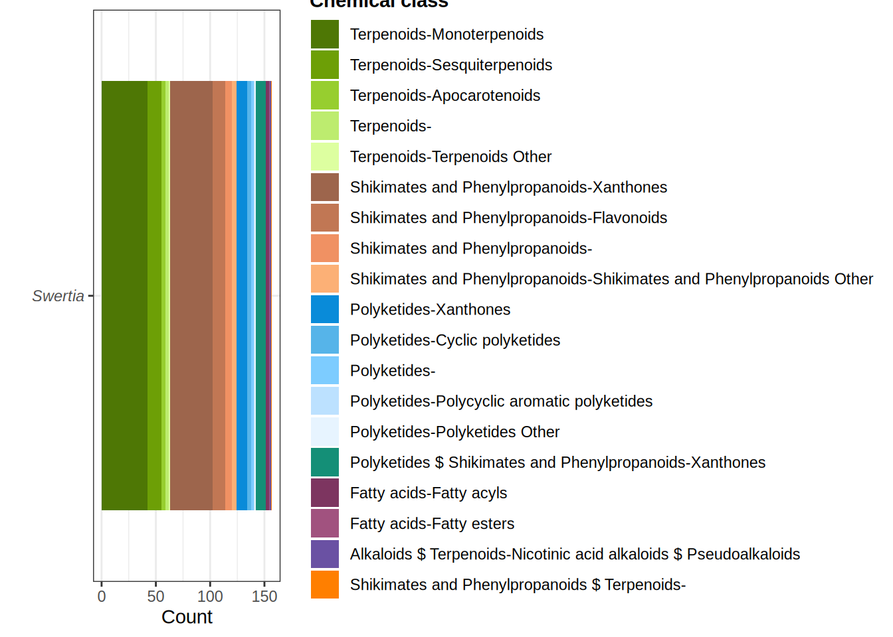
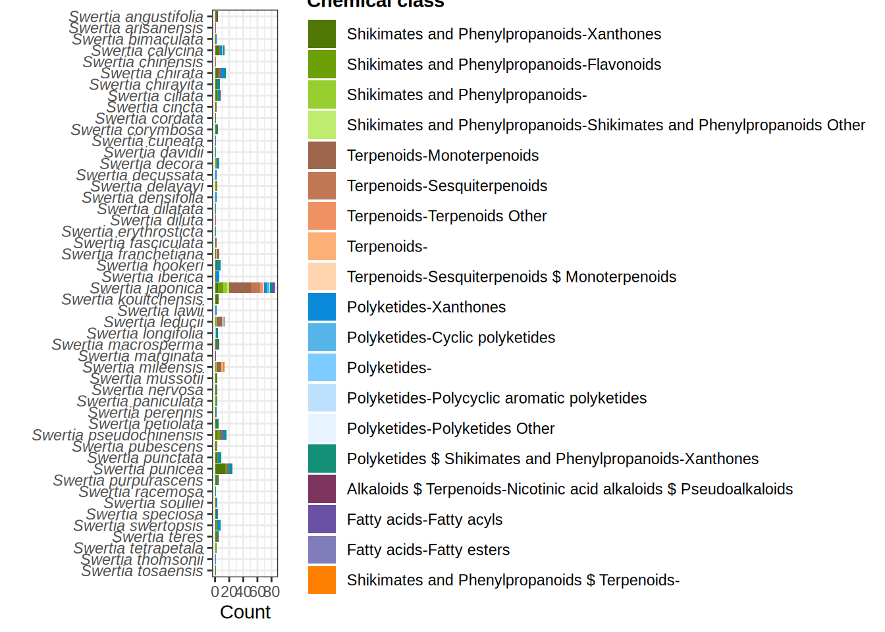

library("cascade")
old_wd <- setwd(tempdir())
try(generate_ids(taxa = "Swertia"))$plots
$plots$Swertia
$plots$Swertia_grouped
$treemaps
$treemaps$Swertia
$sunbursts
$sunbursts$Swertia
$tables
$tables$Swertia
structureLabel structure structureImage
<char> <char> <char>
1: sweroside Q27151406 C=CC1C2CCOC(=O)C2=COC1OC3C(C(C(C(O3)CO)O)O)O
2: sweroside Q27151406 C=CC1C2CCOC(=O)C2=COC1OC3C(C(C(C(O3)CO)O)O)O
3: sweroside Q27151406 C=CC1C2CCOC(=O)C2=COC1OC3C(C(C(C(O3)CO)O)O)O
4: sweroside Q27151406 C=CC1C2CCOC(=O)C2=COC1OC3C(C(C(C(O3)CO)O)O)O
5: sweroside Q27151406 C=CC1C2CCOC(=O)C2=COC1OC3C(C(C(C(O3)CO)O)O)O
---
477: oct-1-en-3-ol Q161667 CCCCCC(C=C)O
478: hexanal Q420698 CCCCCC=O
479: ethyl acetate Q407153 CCOC(=O)C
480: Swerilactone F Q104950941 O=C1OCCC2=CC3=C(C=C12)C4=C(C(=O)OCC4)CC3
481: Swerilactone F Q104950941 O=C1OCCC2=CC3=C(C=C12)C4=C(C(=O)OCC4)CC3
taxaLabels taxa
<char> <char>
1: Swertia punicea Q7655922
2: Swertia delavayi Q10877542
3: Swertia punicea Q7655922
4: Swertia chirata Q104664512
5: Swertia japonica Q11255805
---
477: Swertia japonica Q11255805
478: Swertia japonica Q11255805
479: Swertia japonica Q11255805
480: Swertia leducii Q15237903
481: Swertia mileensis Q15248620
referencesLabels
<char>
1: Qualitative and quantitative analysis of Swertia herbs by high performance liquid chromatography-diode array detector-mass spectrometry (HPLC-DAD-MS).
2: Qualitative and quantitative analysis of Swertia herbs by high performance liquid chromatography-diode array detector-mass spectrometry (HPLC-DAD-MS).
3: A new monosaccharide from Swertia punicea Hemsl.
4: Amarogentin, a naturally occurring secoiridoid glycoside and a newly recognized inhibitor of topoisomerase I from Leishmania donovani
5: Qualitative and quantitative analysis of Swertia herbs by high performance liquid chromatography-diode array detector-mass spectrometry (HPLC-DAD-MS).
---
477: Semburins and Swertiols, Novel 2,8-Dioxabicyclo[3.3.1]nonanes and Their Precursory Alcohols, from Swertia japonica Makino
478: Semburins and Swertiols, Novel 2,8-Dioxabicyclo[3.3.1]nonanes and Their Precursory Alcohols, from Swertia japonica Makino
479: Semburins and Swertiols, Novel 2,8-Dioxabicyclo[3.3.1]nonanes and Their Precursory Alcohols, from Swertia japonica Makino
480: Swerilactones E–G, three unusual lactones from Swertia mileensis
481: Swerilactones E–G, three unusual lactones from Swertia mileensis
references structure_exact_mass structure_xlogp
<char> <num> <num>
1: Q47803813 358.12638 -0.9
2: Q47803813 358.12638 -0.9
3: Q104384327 358.12638 -0.9
4: Q34412486 358.12638 -0.9
5: Q47803813 358.12638 -0.9
---
477: Q104247105 128.12012 2.6
478: Q104247105 100.08882 1.8
479: Q104247105 88.05243 0.7
480: Q104950940 270.08921 2.0
481: Q104950940 270.08921 2.0
chemical_pathway chemical_superclass
<char> <char>
1: Terpenoids Monoterpenoids
2: Terpenoids Monoterpenoids
3: Terpenoids Monoterpenoids
4: Terpenoids Monoterpenoids
5: Terpenoids Monoterpenoids
---
477: Fatty acids Fatty acyls
478: Fatty acids Fatty acyls
479: Fatty acids Fatty esters
480: Shikimates and Phenylpropanoids $ Terpenoids
481: Shikimates and Phenylpropanoids $ Terpenoids
chemical_class
<char>
1: Secoiridoid monoterpenoids
2: Secoiridoid monoterpenoids
3: Secoiridoid monoterpenoids
4: Secoiridoid monoterpenoids
5: Secoiridoid monoterpenoids
---
477: Fatty alcohols
478: Fatty aldehydes
479: Wax monoesters
480:
481: setwd(old_wd)